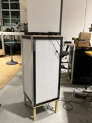

Head to head
More airflow. Less noise. 80% lower filter costs.
Our first prototype, unoptimized, already outperforms the top-rated consumer unit on airflow at comparable noise levels, at a fraction of the power and maintenance cost.
Coway Airmega ProX
#1 Pick, Consumer Reports and HouseFresh

Price: $999
Filter cost: $200 / year
Weight: 50 lbs
Filter type: Proprietary
| CADR (PM1) | Power | Noise (dBA) |
|---|---|---|
| 462 cfm | 59W ($93/yr) | 53.6 |
| 292 cfm | 26W ($40/yr) | 44.4 |
| 212 cfm | 12W ($19/yr) | 37.4 |
Measurements from housefresh.com review
Tidal Air Prototype
First and unoptimized build

Cost: ~$175 (excl. sensors)
Filter cost: $40 / 12+ months
Weight: ~10 lbs
Filter type: Standard HVAC
| CADR (PM1) | Power | Noise (dBA) |
|---|---|---|
| 717 cfm | 38W ($60/yr) | 55.1 |
| 347 cfm | 9W ($14/yr) | 39.1 |
| 215 cfm | 4W ($6/yr) | 32.0 |
Measurement method details available on request